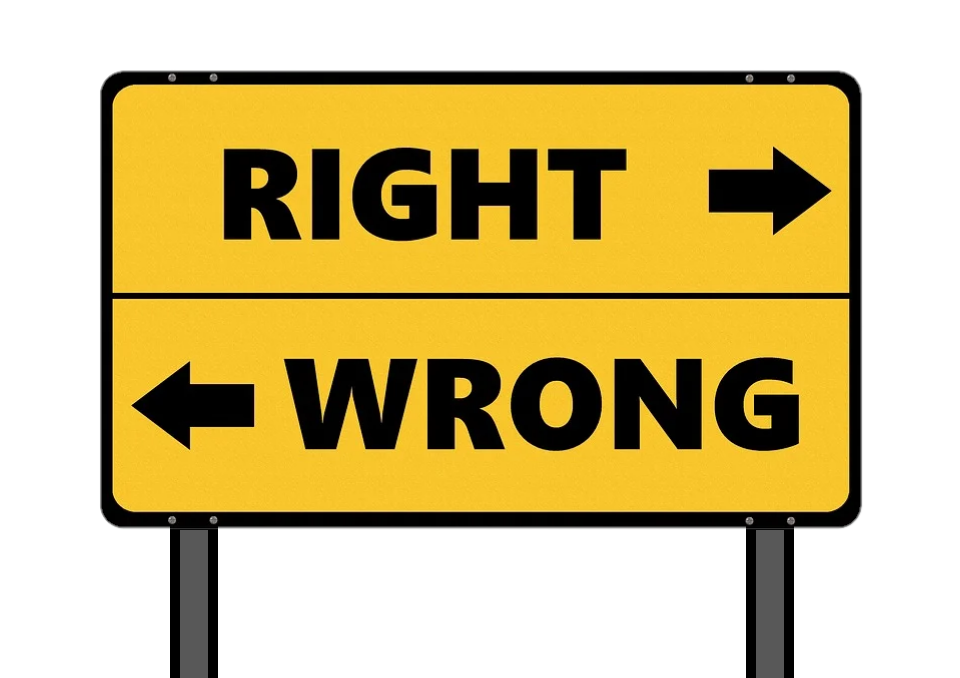
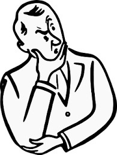
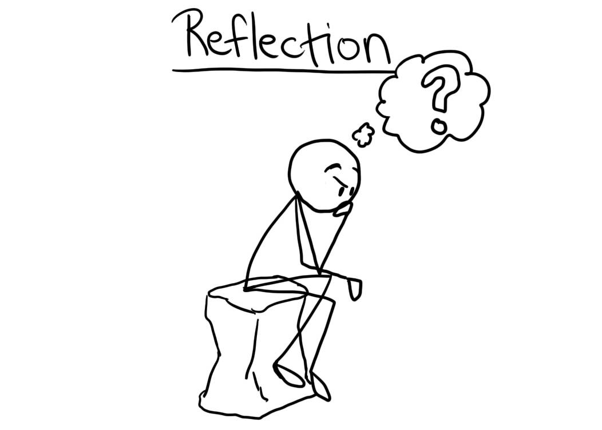

A designer is first and foremost a human being.
As a designer you need to remember that all of your decisions effect everyone who comes into contact with your work. There is a very clear line between helping someone see what they should be seeing and taking advantage of someone. You need to look at your work as a normal human from several viewpoints, to ensure that you are not possibly hurting someone with your actions. Too many things in today's age are designed to take advantage of people, but don't let yourself be one of those designers. You should get what needs to be done morally or it should not be done at all.
A designer is responsible for the work they put into the world.
No matter if someone has asked you to make something, it is still your work. This means that you are responsible for all outcomes of your design, good and bad. Most likely our work will outlive us or become bigger than we are. We cannot ignore our moral compass because someone has asked us to make something. If you continue to do so despite your self-conscious telling you otherwise, you should probably reconsider becoming a designer. There is too much power behind design to be able to willingly hurt others without standing up.
A designer values impact over form.
Just because something works doesn't mean that it is right. Everything we do has consequences, and we should always remember that. If something is designed to negatively affect people and it is successful, it is not a good or well-designed design. We wouldn't want to be negatively affected ourselves, so we must strive to not do so to others.
A designer owes the people who hire them not just their labor, but their counsel.
If you are hired to do a job, you were hired for a reason. You were hired to do a design because you are an expert at it and know what works and what does not. This is why you should always counsel your employers if you have a problem instead of instantly rolling over. An employer could've paid less for someone to do exactly what they told them to do, but instead they picked you for your expertise. A design should be a collaboration to create what's best, not what one person envisions.
A designer welcomes criticism.
It's impossible to be correct 100% of the time. There will always be people who see differently from you for reasons of their own. If someone criticizes your work, you should always welcome it. This is because it could possibly greatly improve your design where you didn't see. Everyone has different experiences and backgrounds, so if someone else has a suggestion you should always listen to their reasoning.
A designer strives to know their audience.
Since design is based around solving a problem, it is very helpful to discover who and why is having said problem. If you are able to put yourself in their shoes, you will be able to better design it specifically for them. There are many questions knowing your audience can answer, and we should always strive to get those answers. Without knowing your audience, you may be barely solving the problem and creating a lot more.
A designer does not believe in edge cases.
When creating our designs, we should be ensuring that there is no room for edge cases. Everyone has their differences, and nobody wants to be left out because of these differences. A design should be like a circle and have no edges. Each person is using your design for the same reason, so why shouldn't they have the same experience as everyone else. Always think about everyone, and never make someone feel like they aren't included.
A designer is part of a professional community.
In design we must ensure that we are building our community for the better. This means that we do not take advantage of other designers, because we are all in the same boat. We wouldn't want someone to plagiarize our work, so why would it be okay for us to do so? Use common sense when it comes your decisions and how they would affect another designer, because they almost always will.
A designer welcomes a diverse and competitive field.
There are going to be times that somebody else knows better than you. During these times it is important to ask questions and listen to what they have to say. Even if you are unable to ask questions, by listening to them and just being in the same place as them you can learn things. You take what you learn with you wherever you go, and you can always put these things into your designs. Getting information from the source is always going to be better than getting it through a separate party.
A designer takes time for self-reflection.
Self-reflection is needed often when it comes to design. Sometimes we just need to think and "wake up" realize what we are doing is incorrect or wrong. With our busy lives there isn't much time to sit and think about what we are doing, only doing it. Therefore, we should always sit down and make time to reflect on the things we've recently done and make a decision if we should continue forward or take a few steps back. Taking a few steps back is okay, because these steps may be crucial in the lifelong journey ahead.
